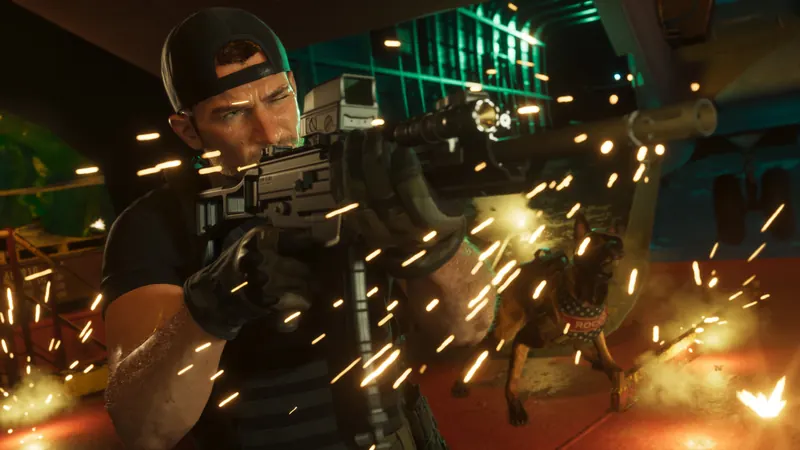

¿Hay trucos en GTA 6? Cómo se desbloquean
Respuesta corta
Sí, hay 61 trucos, iguales en PS5 y Xbox. Pero solo funcionan después de terminar la historia principal, y la mayoría exige además superar un desafío.

Este es el gran cambio respecto a otros GTA: los trucos no están disponibles desde el principio. Según PowerPyx, Red Bull y Vandal, se desbloquean tras completar la historia principal, y la mayoría exige además superar un desafío (en el menú Progreso, apartado Trucos). Si introduces un código antes, no pasa nada.
Cómo se introducen
- Saca el teléfono con la cruceta hacia arriba.
- Mantén L1 y pulsa R1 (en Xbox, mantén LB y pulsa RB).
- Introduce la secuencia del truco con la cruceta.
Qué pierdes al usarlos
- Se desactivan los trofeos o logros.
- Se desactiva el guardado hasta que salgas y recargues la partida (ver cómo guardar).
Iremos añadiendo aquí los códigos que aparezcan confirmados en fuentes fiables, con su fuente. Hasta entonces no publicamos ninguno.
Fuentes
Resumen redactado por 6 Estrellas a partir de las fuentes citadas, revisadas el 20 de noviembre de 2026. Si ves un error, cuéntanoslo desde Quiénes somos.